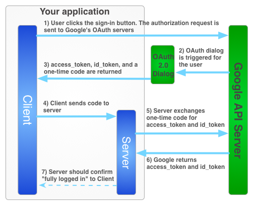

Sig: Authentication using the Google Sup: Oauth: Google, Twitter, GitHub, Ant: Google + API for Con:
To take advantage of all of the benefits of Google+ Sign-In you must use a hybrid server-side flow where a user authorizes your app on the client side using the JavaScript API client and you send a special one-time authorization code to your server.
Your server exchanges this one-time-use code to acquire its own access and refresh tokens from Google for the server to be able to make its own API calls, which can be done while the user is offline.
This one-time code flow has security advantages over both a pure server-side flow and over sending access tokens to your server.
The Google+ Sign-In server-side flow differs from the OAuth 2.0 for Web server applications flow.

Casiano Rodríguez León